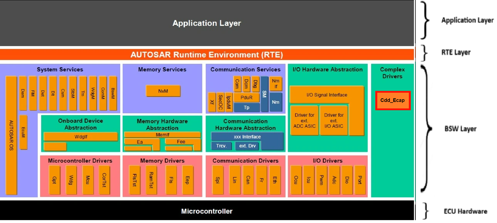
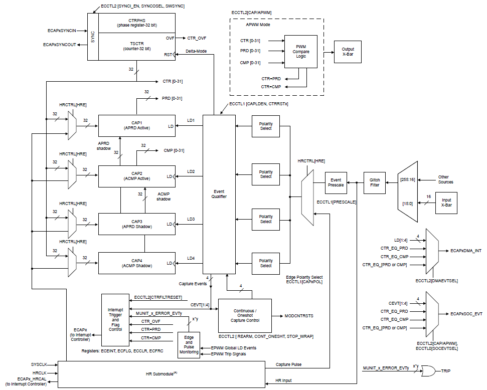
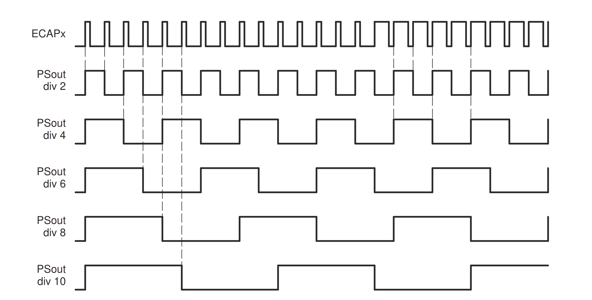
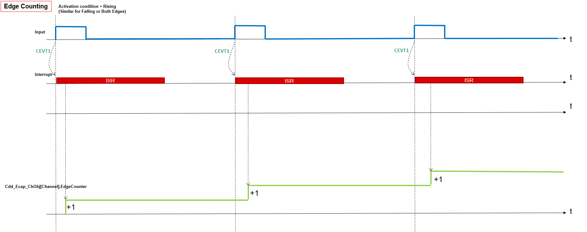
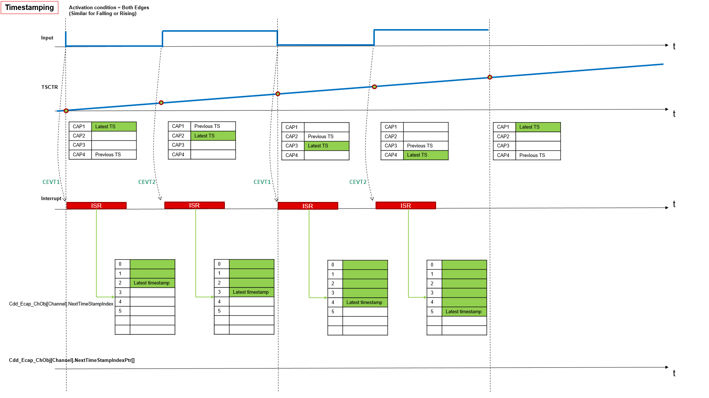
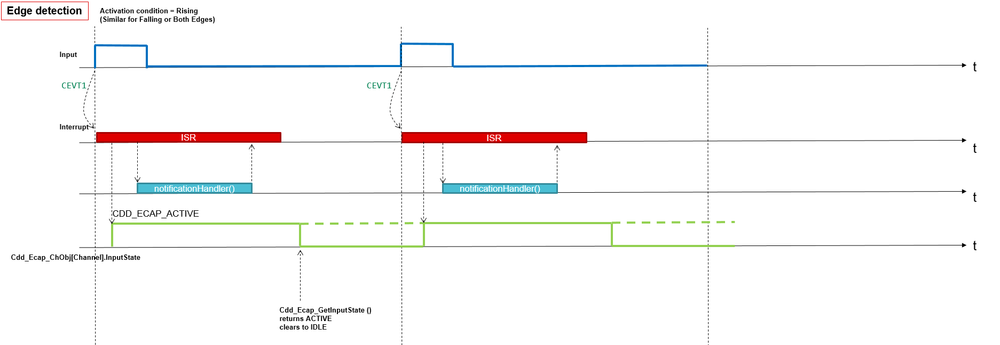
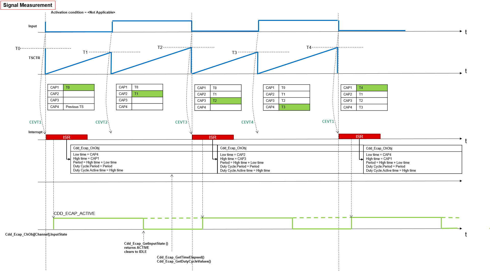
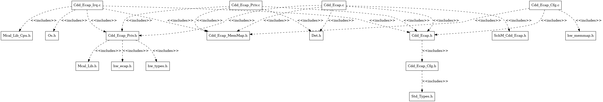
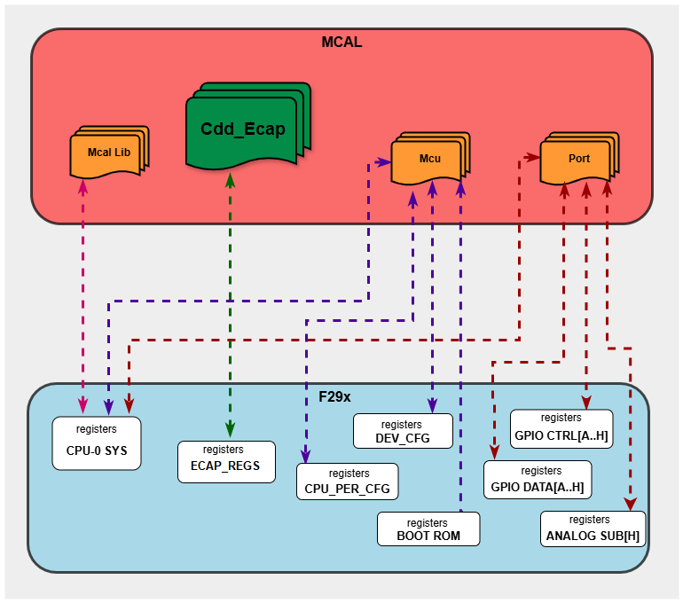

5.12. CDD ECAP Module
5.12.1. Acronyms and Definitions
Abbreviation/Term |
Explanation |
|---|---|
API |
Application Programming Interface |
AUTOSAR |
Automotive Open System Architecture |
Activation condition |
Type of edge that activates the measurement. Rising edge, Falling edge or Both edge |
ACTIVE state |
Input state of a CDD ECAP Channel, an activation edge has been detected. |
BSW |
Basic Software |
CDD |
Complex Device Driver |
Circular buffer |
An area of memory used to store a continuous stream of data by starting again at the beginning of the buffer after reaching the end. |
Channel |
Represents a logical entity bound to one input signal and the hardware resources for the configured measurement mode. |
DET |
Default Error Tracer |
Duty cycle |
Percentage of High Time to Period Time. (High Time / Period Time) * 100% |
ECU |
Electronic Control Unit |
ECAP |
Enhanced Capture |
HRCAP |
High resolution Capture |
ECAP instance |
Single ECAP hardware unit |
GPIO |
General Purpose Input Output |
High time |
Time in ticks during which signal level is high |
HW |
Hardware |
IDLE state |
Input state of an Cdd_Ecap Channel, no activation edge has been detected |
Input state |
Logical input state of an Cdd_Ecap Channel. It can be ACTIVE or IDLE. |
Linear buffer |
An area of memory used to store a stream of data by starting at the beginning of the buffer and stopping at the latest on reaching the end. |
Low time |
Time in ticks during which signal level is low |
MCU |
Microcontroller unit |
Measurement mode |
Measurement mode defines the capability for signal acquisition and evaluation. Possible modes: Signal Edge Detection / Notification, Signal Measurement, Timestamp, Edge Counter |
Measurement mode, Edge counter |
Functionality of an Edge Counter, counting of external edges |
Measurement mode, Signal Edge Detection |
Notification on signal edges. |
Measurement mode, Signal Measurement |
Measurement of elapsed High Time, elapsed Low Time, elapsed Period Time and Duty Cycle of an input signal. |
Measurement mode, Timestamp |
Generation of timestamps for signal edges, see Figure “Cdd_Ecap time stamp” |
MCAL |
Micro Controller Abstraction Layer |
Period time |
Time in ticks between consecutive rising edges or falling edges |
RTE |
Runtime Environment |
SW |
Software |
5.12.2. Introduction
The Cdd ECAP Driver controls the input capture unit (ECAP) of the Texas Instruments F29H85x microcontroller.
Input capture is a fundamental technique used to measure the timing of external events, such as the width or period of pulses generated by sensors or other external devices. These measurements are essential for various automotive applications, including engine control, speed sensing, and position monitoring. The CDD ECAP driver provides a standardized interface for configuring and utilizing the microcontroller’s enhanced CAPture (ECAP) hardware, ensuring that application software can interact with this functionality in a consistent manner across different AUTOSAR-compliant systems.
Cdd ECAP driver provides the following features:
Period, Low, High time measurement
Edge detection and notification
Edge counting
Edge time stamping
{kind=link}

Fig. 5.43 Cdd Ecap MCAL AUTOSAR
This document details AUTOSAR Cdd Ecap module implementation
Supported AUTOSAR Release |
4.3.1 |
|---|---|
Supported Configuration Variants |
Pre-Compile |
Vendor ID |
CDD_ECAP_VENDOR_ID (44) |
Module ID |
CDD_ECAP_MODULE_ID (255) |
5.12.3. Functional Overview
F29H85x microcontroller incorporates six independent eCAP modules. These modules are specifically designed to accurately measure the time of arrival of external signals, making them indispensable for applications that require precise timing information. The eCAP peripheral is highly suitable for a wide range of input capture functionalities, such as :
Speed measurements of rotating machinery (for example, toothed sprockets sensed by way of Hall sensors)
Elapsed time measurements between position sensor pulses
Period and duty cycle measurements of pulse train signals or pulse width modulation (PWM) signals
Decoding current or voltage amplitude derived from duty cycle encoded current/voltage sensors
5.12.3.1. Input capture modes: Single shot capture mode and Continuous capture mode
F29H85x eCAP peripheral offers a variety of input capture modes, allowing it to be adapted to different types of input signals and measurement requirements.
One fundamental mode is the single-shot capture mode. In this mode, the eCAP module can be configured to capture the time-stamps of up to four sequential external events. After the configured number of events (ranging from one to four, as determined by the stop value setting) has been captured, the capture process is automatically halted, and the time-base counter and the contents of the capture registers are frozen until the eCAP module is explicitly re-armed. This mode is particularly useful for capturing a specific sequence of events or for applications where the input signal is not continuous.
Another key operational mode is the continuous capture mode. In this mode, the eCAP module continuously captures the time-stamps of external events into its four 32-bit capture registers. These registers function as a circular buffer: once all four registers have been filled with timestamp values, the next captured event will overwrite the timestamp in the first register (CAP1), and the process continues. This mode is ideal for continuously monitoring a stream of events and for applications where the time difference between consecutive events (e.g., the period of a signal) needs to be measured.
5.12.3.2. Absolute time-stamp capture and difference (delta) mode
The eCAP peripheral also supports different methods for capturing the timestamps. In absolute time-stamp capture, the 32-bit time-base counter within the eCAP module runs continuously from zero up to its maximum value and then wraps around. When a configured trigger event (an edge on the input signal) occurs, the current value of this continuously running counter is captured and stored in one of the capture registers. This provides an absolute timestamp of when the event occurred relative to the start of the counter. Conversely, in difference (delta) mode time-stamp capture, the 32-bit time-base counter is automatically reset to zero immediately after each successful capture event. In this mode, the value captured into the register represents the time that has elapsed since the previous capture event. This is particularly useful for directly measuring the time interval between consecutive pulses or events without needing to perform a subtraction of absolute timestamps in software.
5.12.3.3. Capture registers and event prescaler
In addition to these capture modes, the eCAP peripheral offers a high degree of flexibility in configuring the trigger events. For each of the four capture registers, the user can independently select the edge polarity of the input signal that will trigger a capture. This means that for different capture events in a sequence, one can configure to trigger on a rising edge, another on a falling edge, or even both edges. This flexibility is essential for analyzing complex input signals and for measuring various signal characteristics like pulse width and period. Furthermore, the eCAP peripheral includes an input capture signal prescaling feature. This prescaler allows the frequency of the clock signal that drives the eCAP’s time-base counter to be divided by a programmable integer value ranging from 2 to 62. By adjusting the prescaler, the user can control the resolution of the time-base counter and the maximum time interval that can be measured before the counter overflows. A higher prescaler value results in a lower counter frequency, thus increasing the maximum measurable time but decreasing the resolution, and vice versa.

Fig. 5.44 Cdd Ecap Hardware Block Diagram
Value of the event prescalar other than 1 will make the duty cycle of the signal as 50%. Signal measurement and time-stamp modes are not recommended to use in this case as duty and high time calculation may not give true picture of the actual signal. User can refer to the below diagram

Fig. 5.45 Cdd Ecap Prescaled waveform output Diagram.
5.12.3.4. High Resolution capture mode
HRCAP (High Resolution Capture) mode is a specialized capability of the ECAP (Enhanced Capture) module that provides higher precision timing measurements. All eCAP hardware is accessible to the HRCAP module. HRCAP module doesn’t work on the eCAP clock(SYSCLK), it works on an internal clock called HRCLK(high resolution clock). So, the capture registers will capture the values in HRCLK domain. For this APIs are provided to convert the captured time-stamps from HRCLK domain to SYSCLK domain. HRCAP works on a calibration logic which is always running in the background. The calibration logic essentially calculates the scalefactor for timestamp conversion from HRCLK to SYSCLK domain. While capturing pulses using HRCAP, the capture registers also store information about the integer as well as the fractional part of the captured pulse. So, the user must use float while dealing with HRCAP calculations and measurements otherwise they will lose the accuracy.
HRCAP has some variation in performance which results in a probability distribution. Pulse width of the measured signal can affect the accuracy and standard deviation of the measurement by HRCAP. For more information user can refer to the device datasheet provided in this link: datasheet
5.12.3.5. Measurement modes

Fig. 5.46 Cdd Ecap Edge Counting Waveform

Fig. 5.47 Cdd Ecap Timestamping Waveform

Fig. 5.48 Cdd Ecap Edge Detection Waveform

Fig. 5.49 Cdd Ecap Signal Measurement Waveform
ECAP configuration for various activation conditions
Measurement Mode |
When Activation condition = Rising Edge |
When Activation condition = Falling Edge |
When Activation condition = Both Edge |
|---|---|---|---|
Edge Counter Mode |
CAP1 - rising, Wrap at 1 |
CAP1 - falling, Wrap at 1 |
CAP1 - falling, CAP2 - rising, Wrap at 2 |
Time Stamp Mode |
CAP1 - rising, Wrap at 1 |
CAP1 - falling, Wrap at 1 |
CAP1 - falling, CAP2 - rising, Wrap at 2 |
Signal Edge Detect |
CAP1 - rising, Wrap at 1 |
CAP1 - falling, Wrap at 1 |
CAP1 - falling, CAP2 - rising, Wrap at 2 |
Signal Measurement Mode |
CAP1 - falling, CAP2 - rising, CAP3 - falling, CAP4 - rising. Same for all activation conditions |
5.12.4. Hardware Features
5.12.4.1. Hardware Features supported
Features Supported at a high level are:
4-event time-stamp registers (CAP1-CAP4 each 32 bits) - in Measurement mode - Timestamping
256:1 input multiplexer
32 bit time counter
Edge polarity selection for up to four sequenced time-stamp capture events
Interrupt on either of the four events
Continuous mode capture of time stamps in a four-deep circular buffer
Difference (Delta) mode time-stamp capture and Absolute time-stamp capture
HR mode is supported for high resolution capture of the signals
5.12.4.2. Not supported Features
Cdd Ecap driver doesn’t support APWM mode (single channel PWM generation from ECAP)
Cdd Ecap driver doesn’t support ECAP Synchronization (SYNCIN)
Cdd Ecap doesn’t support Signal monitoring units
Cdd Ecap doesn’t operate ECAP in Single-shot capture of up to four event time-stamps
5.12.4.3. Non compliance
None
5.12.5. Source files
📦f29h85x_mcal
┣ 📂build
┣ 📂docs
┣ 📂drivers
┃ ┣ 📂BSW_Stubs
┃ ┣ 📂Can
┃ ┣ 📂Cdd_Adc
┃ ┗ 📂Cdd_Ecap
┃ ┃ ┣ 📂include
┃ ┃ ┃ ┣ 📜Cdd_Ecap.h : Contains the API declarations of the Cdd Ecap driver to be used by upper layers.
┃ ┃ ┃ ┗ 📜Cdd_Ecap_Priv.h : Contains data structures and Internal function declarations.
┃ ┃ ┣ 📂src
┃ ┃ ┃ ┣ 📜Cdd_Ecap.c : Contains the implementation of the API for Cdd Ecap driver.
┃ ┃ ┃ ┣ 📜Cdd_Ecap_Irq.c : Contains the implementation for Cdd Ecap interrupts handlers.
┃ ┃ ┃ ┗ 📜Cdd_Ecap_Priv.c : Contains Functions that support the API for Cdd Ecap driver
┃ ┃ ┗ 📜CMakeLists.txt
┃ ┣ 📂Cdd_Ipc
┃ ┣ 📂Cdd_Pwm
┃ ┣ 📂Cdd_Sent
┃ ┣ 📂Cdd_Uart
┃ ┣ 📂Cdd_Xbar
┃ ┣ 📂Dio
┃ ┣ 📂Fls
┃ ┣ 📂Gpt
┃ ┣ 📂hw_include
┃ ┣ 📂Lin
┃ ┣ 📂Mcal_Lib
┃ ┣ 📂Mcu
┃ ┣ 📂Port
┃ ┣ 📂Spi
┃ ┗ 📂Wdg
┣ 📂examples
┣ 📂plugins
┣ 📜CMakeLists.txt
┗ 📜CMakePresets.json

Fig. 5.50 Cdd Ecap Header File Structure
5.12.6. Module requirements
5.12.6.1. Memory Mapping
Will be added in later release
5.12.6.2. Scheduling
None
5.12.6.3. Error handling
5.12.6.3.1. Development Error Reporting
Development errors are reported to the DET using the service Det_ReportError(), when enabled. The driver interface contains the MACRO declaration of the error codes to be returned.
5.12.6.4. Error codes
Type of Error |
Related Error code |
Value (Hex) |
|---|---|---|
API service called with invalid pointer |
CDD_ECAP_E_PARAM_POINTER |
0x0AU |
API service called with invalid channel identifier or channel not configured |
CDD_ECAP_E_PARAM_CHANNEL |
0x0BU |
API service called with an invalid or not feasible activation |
CDD_ECAP_E_PARAM_ACTIVATION |
0x0CU |
Init Function Failed |
CDD_ECAP_E_INIT_FAILED |
0x0DU |
API service used with invalid Buffer size |
CDD_ECAP_E_PARAM_BUFFER_SIZE |
0x0EU |
API service called with invalid mode |
CDD_ECAP_E_PARAM_MODE |
0x0FU |
API service called without module initialization |
CDD_ECAP_E_UNINIT |
0x14U |
Cdd_Ecap_StopTimestamp called on channel not started or already stopped |
CDD_ECAP_E_NOT_STARTED |
0x15U |
API service called while a running operation |
CDD_ECAP_E_BUSY_OPERATION |
0x16U |
API service Cdd_Ecap_Init called when module already initialized |
CDD_ECAP_E_ALREADY_INITIALIZED |
0x17U |
API service called when notify interval is invalid |
CDD_ECAP_E_PARAM_NOTIFY_INTERVAL |
0x18U |
API service Cdd_Ecap_GetVersionInfo called and parameter is invalid |
CDD_ECAP_E_PARAM_VINFO |
0x19U |
API service called with an invalid or not feasible start level |
CDD_ECAP_E_PARAM_START_LEVEL |
0x1AU |
API service called with an invalid channel in the HR mode |
CDD_ECAP_E_HR_CHANNEL |
0x1BU |
5.12.7. Used resources
5.12.7.1. Interrupt Handling
The Driver doesn’t register any interrupts handler (ISR), it’s expected that consumer of this driver registers the required interrupt handler.
For every Cdd ECAP channel, an ISR requires to be registered. The Interrupt number associated with instance of the ECAP is detailed in TRM (also, please refer the Example application). Interrupt category should be selected in the Cdd_Ecap plugin.
Cdd_Ecap driver provides ISRs. The ISRs are implemented in the Cdd_Ecap_Irq.c file.
Cdd Ecap ChannelInstance |
Interrupt handler |
INT Signal Name |
|---|---|---|
CDD ECAP Channel 0 |
Cdd_Ecap_ch0Notify |
Depends on the ECAP HW instance used for the Cdd ECAP channel. ECAP1_INT/ECAP2_INT/ECAP3_INT/ECAP4_INT/ECAP5_INT/ECAP6_INT |
CDD ECAP Channel 1 |
Cdd_Ecap_ch1Notify |
Depends on the ECAP HW instance used for the Cdd ECAP channel. ECAP1_INT/ECAP2_INT/ECAP3_INT/ECAP4_INT/ECAP5_INT/ECAP6_INT |
CDD ECAP Channel 2 |
Cdd_Ecap_ch2Notify |
Depends on the ECAP HW instance used for the Cdd ECAP channel. ECAP1_INT/ECAP2_INT/ECAP3_INT/ECAP4_INT/ECAP5_INT/ECAP6_INT |
CDD ECAP Channel 3 |
Cdd_Ecap_ch3Notify |
Depends on the ECAP HW instance used for the Cdd ECAP channel. ECAP1_INT/ECAP2_INT/ECAP3_INT/ECAP4_INT/ECAP5_INT/ECAP6_INT |
CDD ECAP Channel 4 |
Cdd_Ecap_ch4Notify |
Depends on the ECAP HW instance used for the Cdd ECAP channel. ECAP1_INT/ECAP2_INT/ECAP3_INT/ECAP4_INT/ECAP5_INT/ECAP6_INT |
CDD ECAP Channel 5 |
Cdd_Ecap_ch5Notify |
Depends on the ECAP HW instance used for the Cdd ECAP channel. ECAP1_INT/ECAP2_INT/ECAP3_INT/ECAP4_INT/ECAP5_INT/ECAP6_INT |
CDD ECAP Channel 4 |
Cdd_Ecap_HR_ch4Notify |
Depends on the HRCAP HW instance used for the Cdd ECAP channel. HRCAP5_INT/HRCAP6_INT |
CDD ECAP Channel 5 |
Cdd_Ecap_HR_ch5Notify |
Depends on the HRCAP HW instance used for the Cdd ECAP channel. HRCAP5_INT/HRCAP6_INT |
Note
Same Interrupt Category needs to be configured in both Cdd_Ecap and OS Modules.
5.12.7.2. Instance support
CPU instances |
supported |
|---|---|
CPU 1 |
YES |
CPU 2 |
NO |
CPU 3 |
NO |
5.12.7.3. Hardware-Software Mapping
Below image shows Cdd Ecap driver Hardware-Software mapping. For more information related to HW/SW mapping, refer the F29x Reference Manual.
{kind=link}

Fig. 5.51 Cdd Ecap HW/SW Mapping
5.12.8. Integration description
5.12.8.1. Dependent modules
5.12.8.1.1. DET
This implementation depends on the DET in order to report development errors. The detection of development errors is configurable (ON / OFF), The switch CDD_ECAP_DEV_ERROR_DETECT will activate or deactivate the detection of all development errors.
5.12.8.1.2. MCU
MCU Module is required to initialize all the clock to be used by different peripherals
5.12.8.1.3. OS
The Cdd_Ecap driver uses interrupts and therefore there is a dependency on the OS, which configures the interrupt sources.
5.12.8.1.4. SchM
If multiple AUTOSAR runnables have access to the same Data Store Memory block, the exported AUTOSAR specification enforces data consistency by using an AUTOSAR exclusive area. With this specification, the runnables have mutually exclusive access to the per-instance memory global data, which prevents data corruption. Beside the OS, the BSW Scheduler provides functions that Cdd_Ecap module calls at begin and end of critical sections. This implementation requires 1 level of exclusive access to guard critical sections.
The data consistency mechanism that has to be applied to an ExclusiveArea might be domain, ECU or even project specific. The decision which mechanism has to be applied by RTE / Basic Software Scheduler is taken during ECU integration by setting the Exclusive Area configuration parameter RteExclusiveAreaImplMechanism. This parameter is an input for RTE generator. For Cdd_Ecap Module, data consistency and exclusive access to critical sections are required for the following sections as shown in the table below:
Exclusive Area Functions used |
Cdd_Ecap Function calling Exclusive Area |
Need for Exclusive Area |
Recommended Exclusive Area Mapping |
|---|---|---|---|
CDD_ECAP_EXCLUSIVE_AREA_0 |
Cdd_Ecap_DisableNotificationEcap |
To protect against multiple access for shared resources |
ALL_INTERRUPT_BLOCKING : All interrupts should be blocked as this API’s can be called in the interrupts |
5.12.8.2. Resource Allocator
The ECAP module references the Resource Allocator for device, package, and variant configuration. See the Resource Allocator Module User Guide for details on configuring device-specific settings.
5.12.8.2.1. Resource Allocator Usage Example
To allocate ECAP1 to CPU1 using FRAME0:
In the Resource Allocator configuration, create a new Ecap instance allocation
Set InstanceName to
ECAP1Set Frame to
FRAME0The BaseAddr will be automatically calculated as
ECAP1_DRIVER_BASE_FRAME(0U)
Resource Allocator Configuration:
├── EcapInstanceAllocation
│ ├── InstanceName: ECAP1
│ ├── Frame: FRAME0
│ └── BaseAddr: ECAP1_DRIVER_BASE_FRAME(0U)
5.12.9. Configuration
The Cdd Ecap Driver implementation supports single configuration variants, namely Pre-Compile config. The driver expects generated Cdd_Ecap_Cfg.h to be present as input file. The associated Cdd Ecap driver configuration generated source file is Cdd_Ecap_Cfg.c.
The generated configuration files should not be modified manually. The config tool Elektrobit Tresos should be used to modify the configuration files.
Note
Refer section Getting Started with EB Tresos of Chapter MCAL Configuration and EB Tresos for more information on how to load plugin and generate the configuration files.
5.12.9.1. Configuration Parameters
5.12.9.2. CddEcapConfigSet
This container contains the configuration parameters and sub containers of the AUTOSAR CddEcap module.
5.12.9.2.1. CddEcapChannel
Configuration of an individual CDD ECAP channel.
5.12.9.2.1.1. CddEcapChannelId
Item |
|
|---|---|
Name |
CddEcapChannelId |
Description |
Channel Id of the CDD ECAP channel. This value will be assigned to the symbolic name derived of the CddEcapChannel container short name. |
Origin |
Texas Instruments |
Post-Build-Variant-Value |
false |
Value-Configuration-Class |
– |
Pre-Compile-Time |
VARIANT-PRE-COMPILE |
Default-value |
255 |
5.12.9.2.1.2. CddEcapEmulationMode
Item |
|
|---|---|
Name |
CddEcapEmulationMode |
Description |
Configures the emulation mode of the Cdd Ecap. |
Origin |
Texas Instruments |
Post-Build-Variant-Value |
false |
Value-Configuration-Class |
– |
Pre-Compile-Time |
VARIANT-PRE-COMPILE |
Default-value |
CDD_ECAP_EMULATION_FREE_RUN |
Range |
CDD_ECAP_EMULATION_STOP |
5.12.9.2.1.3. CddEcapDefaultStartEdge
Item |
|
|---|---|
Name |
CddEcapDefaultStartEdge |
Description |
Configures the default-activation-edge which shall be used for this channel if there was no activation-edge configured by the call of service CddEcap_SetActivationCondition(). |
Origin |
Texas Instruments |
Post-Build-Variant-Value |
false |
Value-Configuration-Class |
– |
Pre-Compile-Time |
VARIANT-PRE-COMPILE |
Default-value |
CDD_ECAP_RISING_EDGE |
Range |
CDD_ECAP_BOTH_EDGES |
5.12.9.2.1.4. CddEcapInputSelect
Item |
|
|---|---|
Name |
CddEcapInputSelect |
Description |
Configures the source to be used in order to give CDD ECAP the required input |
Origin |
Texas Instruments |
Post-Build-Variant-Value |
false |
Value-Configuration-Class |
– |
Pre-Compile-Time |
VARIANT-PRE-COMPILE |
Default-value |
CDD_ECAP_INPUT_INPUTXBAR1 |
Range |
CDD_ECAP_INPUT_INPUTXBAR1 |
5.12.9.2.1.5. CddEcapIrqType
Item |
|
|---|---|
Name |
CddEcapIrqType |
Description |
Type of Isr function: |
Origin |
Texas Instruments |
Post-Build-Variant-Value |
false |
Value-Configuration-Class |
– |
Pre-Compile-Time |
VARIANT-PRE-COMPILE |
Default-value |
ISR_CAT1_INT |
Range |
ISR_CAT1_INT |
5.12.9.2.1.6. CddEcapMeasurementMode
Item |
|
|---|---|
Name |
CddEcapMeasurementMode |
Description |
Configures the measurement mode of this channel. |
Origin |
Texas Instruments |
Post-Build-Variant-Value |
false |
Value-Configuration-Class |
– |
Pre-Compile-Time |
VARIANT-PRE-COMPILE |
Default-value |
CDD_ECAP_MODE_EDGE_COUNTER |
Range |
CDD_ECAP_MODE_EDGE_COUNTER |
5.12.9.2.1.7. CddEcapPrescaler
Item |
|
|---|---|
Name |
CddEcapPrescaler |
Description |
Configures the prescale value, keep it as 0 if you want to bypass it |
Origin |
Texas Instruments |
Post-Build-Variant-Value |
false |
Value-Configuration-Class |
– |
Pre-Compile-Time |
VARIANT-PRE-COMPILE |
Default-value |
CDD_ECAP_PRESCALAR_1 |
Range |
CDD_ECAP_PRESCALAR_1 |
5.12.9.2.1.8. CddEcapClkFrequency
Item |
|
|---|---|
Name |
CddEcapClkFrequency |
Description |
Reference to a container of the type McuClockReferencePoint, to select an input clock. |
Origin |
Texas Instruments |
Post-Build-Variant-Value |
false |
Value-Configuration-Class |
– |
Pre-Compile-Time |
VARIANT-PRE-COMPILE |
Default-value |
200000000 |
Max-value |
200000000 |
Min-value |
2000000 |
5.12.9.2.1.9. CddEcapHREnable
Item |
|
|---|---|
Name |
CddEcapHREnable |
Description |
This parameter enables HR mode for a particular Cdd Ecap channel. |
Origin |
Texas Instruments |
Post-Build-Variant-Value |
false |
Value-Configuration-Class |
– |
Pre-Compile-Time |
VARIANT-PRE-COMPILE |
Default-value |
false |
5.12.9.2.1.10. CddEcapChannelRef
Item |
|
|---|---|
Name |
CddEcapChannelRef |
Description |
Reference to the ECAP Channel. |
Origin |
Texas Instruments |
Post-Build-Variant-Value |
false |
Value-Configuration-Class |
– |
Pre-Compile-Time |
VARIANT-PRE-COMPILE |
5.12.9.2.1.11. CddEcapFunctionalClock
Item |
|
|---|---|
Name |
CddEcapFunctionalClock |
Description |
Reference to a container of the type McuClockReferencePoint, to select an input clock. |
Origin |
Texas Instruments |
Post-Build-Variant-Value |
false |
Value-Configuration-Class |
– |
Pre-Compile-Time |
VARIANT-PRE-COMPILE |
5.12.9.2.2. CddEcapSignalMeasurement
This container contains the configuration (parameters) in case the measurement mode is “CddEcapSignalMeasurement”
5.12.9.2.2.1. CddEcapSignalMeasurementProperty
Item |
|
|---|---|
Name |
CddEcapSignalMeasurementProperty |
Description |
Configures the property that could be measured in case the mode is “CddEcapSignalMeasurement”. |
Origin |
Texas Instruments |
Post-Build-Variant-Value |
false |
Value-Configuration-Class |
– |
Pre-Compile-Time |
VARIANT-PRE-COMPILE |
Default-value |
CDD_ECAP_HIGH_TIME |
Range |
CDD_ECAP_HIGH_TIME |
5.12.9.2.3. CddEcapTimestampMeasurement
This container contains the configuration (parameters) in case the measurement mode is “CddEcapTimestamp”
5.12.9.2.3.1. CddEcapTimestampMeasurementProperty
Item |
|
|---|---|
Name |
CddEcapTimestampMeasurementProperty |
Description |
Configures the handling of the buffer in case the mode is “Timestamp” |
Origin |
Texas Instruments |
Post-Build-Variant-Value |
false |
Value-Configuration-Class |
– |
Pre-Compile-Time |
VARIANT-PRE-COMPILE |
Default-value |
CDD_ECAP_CIRCULAR_BUFFER |
Range |
CDD_ECAP_CIRCULAR_BUFFER |
5.12.9.2.3.2. CddEcapTimestampNotification
Item |
|
|---|---|
Name |
CddEcapTimestampNotification |
Description |
Notification function if the number of requested timestamps |
Multiplicity-Configuration-Class |
– |
Pre-Compile Time |
VARIANT-PRE-COMPILE |
Origin |
Texas Instruments |
Post-build-variant-multiplicity |
false |
Post-Build-Variant-Value |
false |
Value-Configuration-Class |
– |
Pre-Compile-Time |
VARIANT-PRE-COMPILE |
Default-value |
NULL_PTR |
5.12.9.2.4. CddEcapSignalEdgeDetection
This container contains the configuration (parameters) in case the measurement mode is “CddEcapSignalEdgeDetection”
5.12.9.2.4.1. CddEcapSignalNotification
Item |
|
|---|---|
Name |
CddEcapSignalNotification |
Description |
Notification function for signal notification. |
Multiplicity-Configuration-Class |
– |
Pre-Compile Time |
VARIANT-PRE-COMPILE |
Origin |
Texas Instruments |
Post-build-variant-multiplicity |
false |
Post-Build-Variant-Value |
false |
Value-Configuration-Class |
– |
Pre-Compile-Time |
VARIANT-PRE-COMPILE |
Default-value |
NULL_PTR |
5.12.9.3. CddEcapGeneral
Configuration of general CDD ECAP parameters.
5.12.9.3.1. CddEcapDevErrorDetect
Item |
|
|---|---|
Name |
CddEcapDevErrorDetect |
Description |
Switches the development error detection and notification on or off. |
Origin |
Texas Instruments |
Post-Build-Variant-Value |
false |
Value-Configuration-Class |
– |
Pre-Compile-Time |
VARIANT-PRE-COMPILE |
Default-value |
false |
5.12.9.3.2. CddEcapDeInitApi
Item |
|
|---|---|
Name |
CddEcapDeInitApi |
Description |
Adds / removes the service CddEcap_DeInit() from the code. |
Origin |
Texas Instruments |
Post-Build-Variant-Value |
false |
Value-Configuration-Class |
– |
Pre-Compile-Time |
VARIANT-PRE-COMPILE |
Default-value |
true |
5.12.9.3.3. CddEcapEdgeCountApi
Item |
|
|---|---|
Name |
CddEcapEdgeCountApi |
Description |
Adds / removes all services related to the edge counting functionality as listed below, from the code: CddEcap_ResetEdgeCount(), CddEcap_EnableEdgeCount(), CddEcap_DisableEdgeCount(), CddEcap_GetEdgeNumbers(). |
Origin |
Texas Instruments |
Post-Build-Variant-Value |
false |
Value-Configuration-Class |
– |
Pre-Compile-Time |
VARIANT-PRE-COMPILE |
Default-value |
false |
5.12.9.3.4. CddEcapEdgeDetectApi
Item |
|
|---|---|
Name |
CddEcapEdgeDetectApi |
Description |
Adds / removes the services related to the edge detection functionality, from the code: |
Origin |
Texas Instruments |
Post-Build-Variant-Value |
false |
Value-Configuration-Class |
– |
Pre-Compile-Time |
VARIANT-PRE-COMPILE |
Default-value |
false |
5.12.9.3.5. CddEcapGetDutyCycleValuesApi
Item |
|
|---|---|
Name |
CddEcapGetDutyCycleValuesApi |
Description |
Adds / removes the service CddEcap_GetDutyCycleValues() from the code. |
Origin |
Texas Instruments |
Post-Build-Variant-Value |
false |
Value-Configuration-Class |
– |
Pre-Compile-Time |
VARIANT-PRE-COMPILE |
Default-value |
false |
5.12.9.3.6. CddEcapGetInputStateApi
Item |
|
|---|---|
Name |
CddEcapGetInputStateApi |
Description |
Adds / removes the service CddEcap_GetInputState() from the code. |
Origin |
Texas Instruments |
Post-Build-Variant-Value |
false |
Value-Configuration-Class |
– |
Pre-Compile-Time |
VARIANT-PRE-COMPILE |
Default-value |
false |
5.12.9.3.7. CddEcapGetTimeElapsedApi
Item |
|
|---|---|
Name |
CddEcapGetTimeElapsedApi |
Description |
Adds / removes the service CddEcap_GetTimeElapsed() from the code. |
Origin |
Texas Instruments |
Post-Build-Variant-Value |
false |
Value-Configuration-Class |
– |
Pre-Compile-Time |
VARIANT-PRE-COMPILE |
Default-value |
false |
5.12.9.3.8. CddEcapGetVersionInfoApi
Item |
|
|---|---|
Name |
CddEcapGetVersionInfoApi |
Description |
Adds / removes the service CddEcap_GetVersionInfo() from the code. |
Origin |
Texas Instruments |
Post-Build-Variant-Value |
false |
Value-Configuration-Class |
– |
Pre-Compile-Time |
VARIANT-PRE-COMPILE |
Default-value |
false |
5.12.9.3.9. CddEcapSignalMeasurementApi
Item |
|
|---|---|
Name |
CddEcapSignalMeasurementApi |
Description |
Adds / removes the services CddEcap_StartSignalMeasurement() and CddEcap_StopSignalMeasurement() from the code. |
Origin |
Texas Instruments |
Post-Build-Variant-Value |
false |
Value-Configuration-Class |
– |
Pre-Compile-Time |
VARIANT-PRE-COMPILE |
Default-value |
true |
5.12.9.3.10. CddEcapTimestampApi
Item |
|
|---|---|
Name |
CddEcapTimestampApi |
Description |
Adds / removes all services related to the timestamping functionality as listed below from the code: CddEcap_StartTimestamp(), CddEcap_StopTimestamp(), CddEcap_GetTimestampIndex(). |
Origin |
Texas Instruments |
Post-Build-Variant-Value |
false |
Value-Configuration-Class |
– |
Pre-Compile-Time |
VARIANT-PRE-COMPILE |
Default-value |
false |
5.12.9.4. Steps To Configure Cdd Ecap Module
Open EB Tresos configurator tool, load Cdd_Ecap module. Select the Precompile Config Variant.
Configure the required parameters.
Save the configuration and generate the configuration.
5.12.10. Examples
The example applications demonstrates usecases of the Cdd Ecap driver APIs. The examples are explained below in detailed.
5.12.10.1. Cdd_Ecap_Capture_Signal
5.12.10.1.1. Overview of Cdd_Ecap_Capture_Signal
This example configures 4 channels of Cdd ECAP in different modes and captures a PWM signal.
Cdd Ecap Channel |
Measurement Mode |
Input |
ECAP Instance and interrupt used |
Notification handler |
Activation |
Other |
|---|---|---|---|---|---|---|
Channel 0 |
Signal Measurement Mode |
INPUTXBAR7 |
ECAP1, Interrupt 78 |
Signal Measurement property is high time |
||
Channel 1 |
Time Stamp Mode |
INPUTXBAR7 |
ECAP2, Interrupt 79 |
TimeStampNotify |
Rising Edge |
Buffer type is Circular |
Channel 2 |
Edge Counter Mode |
INPUTXBAR7 |
ECAP3, Interrupt 80 |
Rising Edge |
||
Channel 3 |
Signal Edge Detect |
INPUTXBAR7 |
ECAP4, Interrupt 81 |
SignalNotify |
Rising Edge |
Input Xbar 7 is configured to use GPIO1 as input PWM signal (EPWM1_A) is generated on the GPIO0.
Cdd_Ecap_Capture_Signal
EcuM_Init()
Initializes clock to 200 MHz using Mcu_Init().
Initializes pins as GPIO Outputs and GPIO Inputs using Port_Init()
Initializes Cdd_Ecap driver using Cdd_Ecap_Init()
Cdd_Ecap_StartSignalMeasurement starts signal measurement on Cdd ECAP Channel 0 using ECAP0. Cdd_Ecap_GetDutyCycleValues and Cdd_Ecap_GetTimeElapsed gets duty cycle values.
Cdd_Ecap_StartTimestamp starts timestamping on Cdd ECAP Channel 1 using ECAP1 and Cdd_Ecap_EnableNotification enables timestamp notification
Cdd_Ecap_EnableEdgeCount starts edge counting on Cdd ECAP Channel 2 using ECAP2
Cdd_Ecap_EnableEdgeDetection starts edge detection on Cdd ECAP Channel 3 using ECAP3 and Cdd_Ecap_EnableNotification enables edge detection notification. Cdd_Ecap_GetInputState gets input state
Cdd_Ecap_DeInit de-initializes Cdd ECAP
5.12.10.2. Setup required to run Cdd_Ecap_Capture_Signal
Install Code Composer Studio(CCS) latest version
Install latest c29 compiler
Connect the hardware (Loopback from GPIO0 to GPIO1. On HSEC dock, this is from HSEC49 to HSEC50) and power up
Connect the uart set up to check the log on serial console
5.12.10.3. How to run Cdd_Ecap_Capture_Signal
Open CCS and import Cdd Ecap Example
Build project and start debug project
5.12.10.3.1. Sample Log of Cdd_Ecap_Capture_Signal
Cdd_Ecap_Capture_Signal Example Application - STARTS!
Cdd Ecap MCAL Version Info
--------------------------
Vendor ID : 44
Module ID : 255
SW Major Version : 3
SW Minor Version : 0
SW Patch Version : 0
Signal Measurement Start on Channel 0 ...
High time of the signal is: 251
Period of the signal is: 1002
Timestamping Start on Channel 1...
Timestamps in Buffer
buffer[0]: 0xb868 (47208)
buffer[1]: 0xbc52 (48210)
buffer[2]: 0xc03c (49212)
buffer[3]: 0xc426 (50214)
buffer[4]: 0xc810 (51216)
buffer[5]: 0xcbfa (52218)
buffer[6]: 0xcfe4 (53220)
buffer[7]: 0xd3ce (54222)
buffer[8]: 0xd7b8 (55224)
buffer[9]: 0xdba2 (56226)
buffer[10]: 0xdf8c (57228)
buffer[11]: 0xe376 (58230)
buffer[12]: 0xe760 (59232)
buffer[13]: 0x9d02 (40194)
buffer[14]: 0xa0ec (41196)
buffer[15]: 0xa4d6 (42198)
buffer[16]: 0xa8c0 (43200)
buffer[17]: 0xacaa (44202)
buffer[18]: 0xb094 (45204)
buffer[19]: 0xb47e (46206)
Edge Counting Start on Channel 2...
Edge count is: 1276
Edge Detection Start on Channel 3...
Number of edges detected is: 1363
Cdd_Ecap_Capture_Signal Example Application - ENDS!
5.12.10.4. Cdd_Ecap_HrMode
5.12.10.4.1. Overview of Cdd_Ecap_HrMode
This example configures ECAP in HR mode and measures the high time and period time. This example demonstrates the HR mode for precise signal measurement. A PWM signal of fixed duty and time period is used for this purpose.
Cdd Ecap Channel |
Measurement Mode |
Input |
ECAP Instance and interrupt used |
Notification handler |
Activation |
Other |
|---|---|---|---|---|---|---|
Channel 0 |
Signal Measurement Mode |
INPUTXBAR7 |
ECAP5, HRCAP5, Interrupt 82, 83 |
Signal Measurement property is high time |
Input Xbar 7 is configured to use GPIO1 as input PWM signal (EPWM1_A) is generated on the GPIO0.
Cdd_Ecap_HrMode
EcuM_Init()
Initializes clock to 200 MHz using Mcu_Init().
Initializes pins as GPIO Outputs and GPIO Inputs using Port_Init()
Initializes Cdd_Ecap driver using Cdd_Ecap_Init()
Cdd_Ecap_StartSignalMeasurement starts signal measurement on Cdd ECAP Channel 0 using ECAP5. Cdd_Ecap_GetDutyCycleValues and Cdd_Ecap_GetTimeElapsed gets duty cycle values.
Cdd_Ecap_GetHrScaleFactor returns scalefactor.
Cdd_Ecap_ConvertHrTimeStampToEcapTimeStamp converts timestamp from HRCLK to SYSCLK domain
Cdd_Ecap_DeInit de-initializes Cdd ECAP
5.12.10.5. Setup required to run Cdd_Ecap_HrMode
Install Code Composer Studio(CCS) latest version
Install latest c29 compiler
Connect the hardware (Loopback from GPIO0 to GPIO1. On HSEC dock, this is from HSEC49 to HSEC50) and power up
Connect the uart set up to check the log on serial console
5.12.10.6. How to run Cdd_Ecap_HrMode
Open CCS and import Cdd Ecap Example
Build project and start debug project
5.12.10.6.1. Sample Log of Cdd_Ecap_HrMode
Cdd_Ecap_HrMode Example Application - STARTS!
Cdd Ecap MCAL Version Info
--------------------------
Vendor ID : 44
Module ID : 255
SW Major Version : 3
SW Minor Version : 0
SW Patch Version : 0
Signal Measurement Start on Channel 0 ...
Example passed!!!
High time of the signal in nano-secs is: 1251.290649
Period of the signal in nano-secs is: 5010.710938
Cdd_Ecap_HrMode Example Application - ENDS!
5.12.10.7. File Structure
📦f29h85x_mcal
┣ 📂build
┣ 📂docs
┣ 📂drivers
┣ 📂examples
┃ ┣ 📂AppUtils
┃ ┣ 📂Can
┃ ┣ 📂Cdd_Adc
┃ ┣ 📂Cdd Ecap
┃ ┃ ┣ 📂 Cdd_Ecap_Capture_Signal
┃ ┃ ┃ ┣ 📂CCS
┃ ┃ ┃ ┃ ┗ 📜Cdd_Ecap_Capture_Signal.projectspec
┃ ┃ ┃ ┣ 📂Cdd_Ecap_Capture_Signal_Config
┃ ┃ ┃ ┃ ┣ 📂config
┃ ┃ ┃ ┃ ┃ ┣ 📜Dem.xdm
┃ ┃ ┃ ┃ ┃ ┣ 📜EcuM.xdm
┃ ┃ ┃ ┃ ┃ ┣ 📜Mcu.xdm
┃ ┃ ┃ ┃ ┃ ┣ 📜Os.xdm
┃ ┃ ┃ ┃ ┃ ┣ 📜Port.xdm
┃ ┃ ┃ ┃ ┃ ┣ 📜Cdd_Pwm.xdm
┃ ┃ ┃ ┃ ┃ ┣ 📜Cdd_Xbar.xdm
┃ ┃ ┃ ┃ ┃ ┗ 📜Cdd_Ecap.xdm : Generated EB Tresos config file in .xdm format
┃ ┃ ┃ ┃ ┣ 📂include
┃ ┃ ┃ ┃ ┃ ┣ 📜Dem_Cfg.h
┃ ┃ ┃ ┃ ┃ ┣ 📜EcuM_Cfg.h
┃ ┃ ┃ ┃ ┃ ┣ 📜Mcu_Cfg.h
┃ ┃ ┃ ┃ ┃ ┣ 📜Os_Cfg.h
┃ ┃ ┃ ┃ ┃ ┣ 📜Port_Cfg.h
┃ ┃ ┃ ┃ ┃ ┣ 📜Cdd_Pwm.h
┃ ┃ ┃ ┃ ┃ ┣ 📜Cdd_Xbar.h
┃ ┃ ┃ ┃ ┃ ┗ 📜Cdd_Ecap_Cfg.h : Contains the generated pre-compiler configuration header
┃ ┃ ┃ ┃ ┣ 📂src
┃ ┃ ┃ ┃ ┃ ┣ 📜Dem_Cfg.c
┃ ┃ ┃ ┃ ┃ ┣ 📜EcuM_Cfg.c
┃ ┃ ┃ ┃ ┃ ┣ 📜Mcu_PBcfg.c
┃ ┃ ┃ ┃ ┃ ┣ 📜Os_Cfg.c
┃ ┃ ┃ ┃ ┃ ┣ 📜Port_Cfg.c
┃ ┃ ┃ ┃ ┃ ┣ 📜Cdd_Pwm.c
┃ ┃ ┃ ┃ ┃ ┣ 📜Cdd_Xbar.c
┃ ┃ ┃ ┃ ┃ ┗ 📜Cdd_Ecap_Cfg.c : Contains the generated pre-compiler configuration source
┃ ┃ ┃ ┃ ┣ 📂swcd
┃ ┃ ┃ ┃ ┃ ┗ 📜Cdd_Xbar_BSWMD.arxml
┃ ┃ ┃ ┃ ┗ 📜CMakeLists.txt
┃ ┃ ┃ ┣ 📜CMakeLists.txt
┃ ┃ ┗ ┗ 📜Cdd_Ecap_Capture_Signal.c: Example application for Cdd Ecap
┃ ┗ 📜CMakeLists.txt
┃ ┣ 📂Cdd_Ipc
┃ ┣ 📂Cdd_Pwm
┃ ┣ 📂Cdd_Sent
┃ ┣ 📂Cdd_Uart
┃ ┣ 📂Cdd_Xbar
┃ ┣ 📂DeviceSupport
┃ ┣ 📂Dio
┃ ┣ 📂Fls
┃ ┣ 📂Gpt
┃ ┣ 📂Lin
┃ ┣ 📂Mcu
┃ ┣ 📂Port
┃ ┣ 📂Spi
┃ ┗ 📂Wdg
┣ 📂plugins
┣ 📜CMakeLists.txt
┗ 📜CMakePresets.json